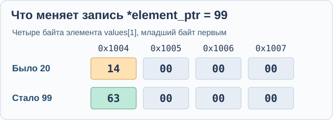

Как устроена память
Мы уже умеем читать значение по имени. Теперь посмотрим, как найти его по адресу. Для этого удобно взять массив. Его элементы в C++ гарантированно лежат подряд.
От индекса к адресу
int values[3] = {10, 20, 30};
У каждого байта памяти есть адрес. Предположим, что массив начинается по адресу 0x1000, а один int занимает четыре байта. Тогда весь массив займёт 12 байтов. Префикс 0x означает шестнадцатеричную запись числа.
| Первый элемент | Второй элемент | Третий элемент | |
|---|---|---|---|
| Элемент массива | values[0] |
values[1] |
values[2] |
| Значение | 10 | 20 | 30 |
| Адрес первого байта | 0x1000 |
0x1004 |
0x1008 |
| Адрес последнего байта | 0x1003 |
0x1007 |
0x100B |
От первого элемента до третьего — два шага по четыре байта. Поэтому адрес третьего элемента на восемь байтов больше начального. Для отдельно объявленных переменных порядок размещения язык не задаёт.
Размер своего типа можно узнать через sizeof(int). Он зависит от платформы. sizeof(char) всегда равен одному байту. Обычно в байте восемь битов. Точное число даёт CHAR_BIT из <climits>.
Как изменить элемент через указатель?
Указатель хранит адрес. Оператор & позволяет получить адрес объекта, а * перед именем указателя даёт доступ к объекту по этому адресу.
int values[3] = {10, 20, 30};
int* element_ptr = &values[0];
element_ptr = &values[1];
*element_ptr = 99;
| После строки | Куда указывает element_ptr |
Содержимое массива |
|---|---|---|
int* element_ptr = &values[0]; |
на первый элемент | 10, 20, 30 |
element_ptr = &values[1]; |
на второй элемент | 10, 20, 30 |
*element_ptr = 99; |
на второй элемент | 10, 99, 30 |
Проследи последнюю запись по адресам из таблицы выше.
element_ptr хранит 0x1004 ───→ values[1] по адресу 0x1004
было 20, записали 99
Если int занимает четыре восьмибитных байта, то запись в *element_ptr задаёт новое значение всех четырёх байтов элемента. На рисунке числа записаны в шестнадцатеричной системе. У 20 младший байт равен 14, у 99 он равен 63. Три старших байта и до, и после записи нулевые.

Запись по адресу
В массиве три числа. Указатель element_ptr хранит адрес одного из них. Выбери элемент, затем попробуй записать в него число через *element_ptr.
Массив в памяти
В этой модели int занимает четыре байта. Младший байт идёт первым. Под каждым байтом указан его адрес, оба записаны в шестнадцатеричной системе.
Как это записать на C++
Проверь себя
Запиши 258 во второй элемент, сохранив значения 10 и 30 в соседних. Прежде чем нажать кнопку записи, предположи, какие два байта станут ненулевыми.
Для процессора это может быть одна команда записи четырёх байтов по адресу. Во многих компьютерах новое значение сначала попадает в кэш — небольшую быструю память, где процессор держит недавно использованные данные. Момент, когда изменится содержимое микросхемы ОЗУ, из строки C++ определить нельзя. Как связаны кэш и оперативная память.
Сколько времени живут данные?
Вызовы функций на обычной платформе используют стек. При каждом вызове появляется место для локальных данных и служебной информации. Часть значений компилятор может держать в регистрах. Для программиста важно время жизни объекта. Обычная локальная переменная существует с момента её создания до выхода из блока.
#include <vector>
using std::vector;
void example() {
vector<int> values(1000, 0);
values[0] = 7;
}
У вектора есть две части. Сам объект values создан внутри функции. Тысяча элементов лежит подряд в отдельной области динамической памяти, которую часто называют кучей. Объект вектора управляет этой областью и освобождает её при выходе из функции.
Локальный объект Динамическая память
values ───→ [7][0][0] … [0]
1000 элементов int
Поэтому sizeof(values) даёт размер самого объекта вектора. Для его 1000 текущих элементов требуется ещё values.size() * sizeof(int) байтов. Вектор может держать запас места и для следующих элементов.
Область видимости определяет, где в коде доступно имя. Время жизни определяет, когда существует сам объект. Например, локальная переменная с static сохраняет своё значение между вызовами функции, хотя имя доступно только внутри блока. Если после уничтожения объекта остался указатель на него, он стал висячим. Читать или менять объект через такой указатель нельзя.
В каком порядке лежат байты одного числа?
Возьмём 32-битное беззнаковое число 0x12345678. При восьми битах в байте каждая пара шестнадцатеричных цифр занимает один байт. Какую пару мы увидим по первому адресу, зависит от порядка байтов на машине.
| Адрес | 0x1000 |
0x1001 |
0x1002 |
0x1003 |
|---|---|---|---|---|
| Младший байт первым (little-endian) | 78 |
56 |
34 |
12 |
| Старший байт первым (big-endian) | 12 |
34 |
56 |
78 |
В обоих случаях значение числа одно и то же. Разницу видно при чтении его представления по одному байту. На обычной ОС программа работает с виртуальными адресами. По такому адресу нельзя определить положение байта на физической планке памяти.
Подробнее об адресах и типах. Stanford CS106L, Introduction to Pointers (2008) · Бьёрн Страуструп, A Tour of C++, 2-е издание (2018)